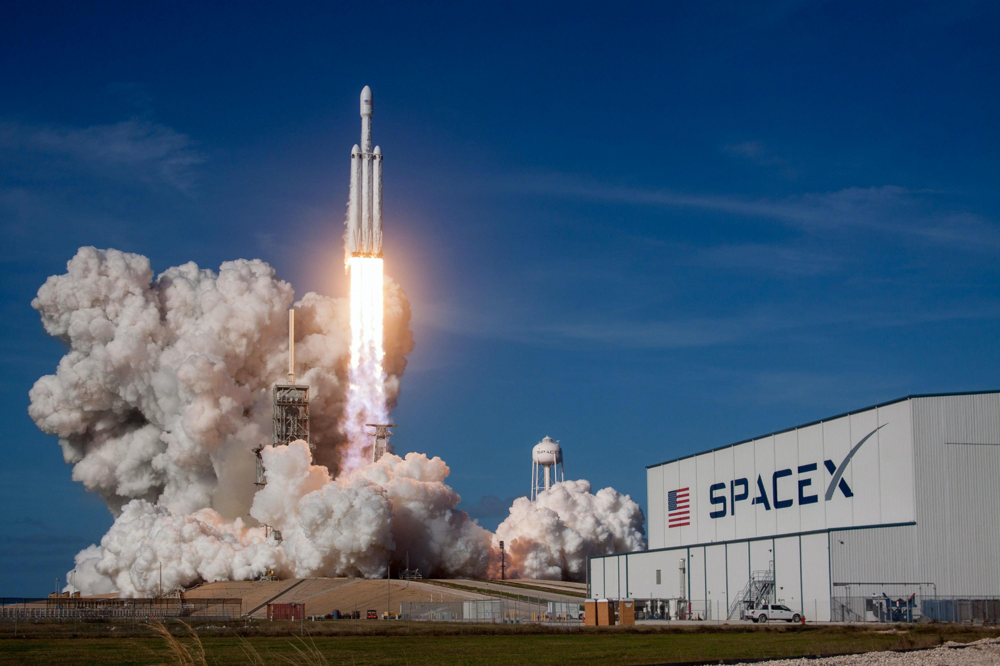

SpaceX prévoit le premier décollage de la fusée Falcon Heavy pour le 6 février
Le vol inaugural du lanceur lourd Falcon Heavy, prévu initialement pour l'automne, se déroulera le mardi 6 février, annonce SpaceX. Fin janvier, l'entreprise américaine a effectué avec succès un test de mise à feu statique.
Dans le domaine de l’astronautique, il faut parfois composer avec des impondérables. Elon Musk s’en est rendu compte avec Falcon Heavy. Sa société spécialisée dans le vol spatial, SpaceX, devait initialement procéder au vol inaugural de sa toute première fusée lourde au cours de l’automne 2017, en novembre. Mais le 1er décembre est arrivé et aucun décollage n’a eu lieu.
En fin de compte, le grand jour aura lieu le mardi 6 février 2018. Dans un message publié samedi 27 janvier sur Twitter, Elon Musk, le fondateur de SpaceX, a déclaré qu’un créneau a été trouvé à cette date pour faire décoller le lanceur depuis le centre spatial Kennedy, en Floride. Trois jours avant, Elon Musk annonçait que le test de mise à feu statique, préalable indispensable au vol, s’était bien passé.
CHANGEMENT DE CATÉGORIE
Si SpaceX maîtrise désormais correctement les vols intermédiaires, qui sont assurés par la fusée Falcon 9, l’entrée dans la catégorie des lanceurs lourdes constituera un vrai défi pour l’entreprise américaine. Beaucoup de paramètres de vol changent pour arracher une telle masse de la gravité terrestre. En outre, l’engin s’avère bien plus complexe, notamment du fait du nombre accru de moteurs-fusées employés.
À dire vrai, la société envisage même un échec au cours du lancement.
C’est ce qu’a fait comprendre le patron de la compagnie l’été dernier en évoquant de « nombreux risques » : « il est très probable que le véhicule n’arrive même pas en orbite. Je tiens juste à ce que [les attentes du public] prennent [cet élément] en compte. J’espère qu’il ira assez loin du pas de tir pour ne pas l’abîmer. Honnêtement, ce serait déjà une réussite ».
« IL EST TRÈS PROBABLE QUE LE VÉHICULE N’ARRIVE MÊME PAS EN ORBITE »
Capable de transporter une charge de presque 64 tonnes en orbite terrestre basse, le Falcon Heavy apparaît comme une version bien plus musclée que le lanceur Falcon 9. Il s’agit, en simplifiant, d’une fusée classique à laquelle on appose deux propulseurs latéraux. En orbite de transfert géostationnaire, le Falcon Heavy doit pouvoir transporter une charge utile d’un peu moins de 27 tonnes.
Le lancement est capital pour SpaceX puisque le lanceur est censé lui permettre, en 2018, de propulser deux touristes astronautes vers la Lune. Pour cette mission, le Falcon Heavy embarquera une capsule Dragon 2. Aujourd’hui, celle-ci, dans sa version de base, est employée dans les opérations de ravitaillement de la station spatiale internationale.
C’est aussi un cap symbolique car il s’agira aussi de l’emploi de la fusée américaine la plus puissante depuis celle du Saturn V de la Nasa, en 1973. On peut dès lors comprendre la prudence avec laquelle SpaceX avance sur ce dossier, même si cela nécessite des réajustements de calendrier.